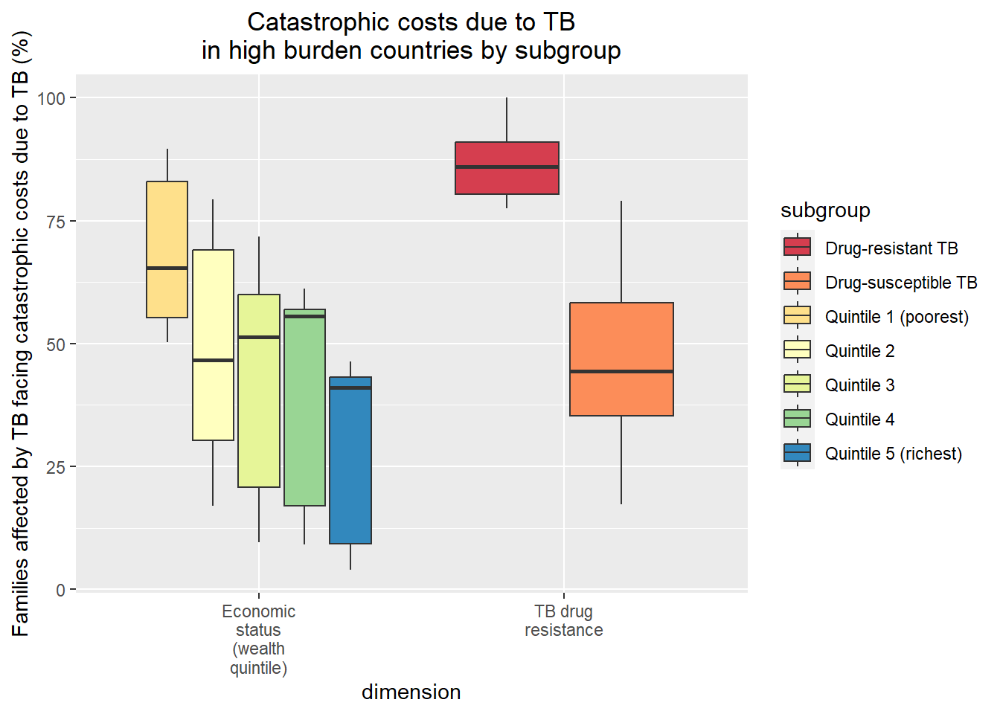
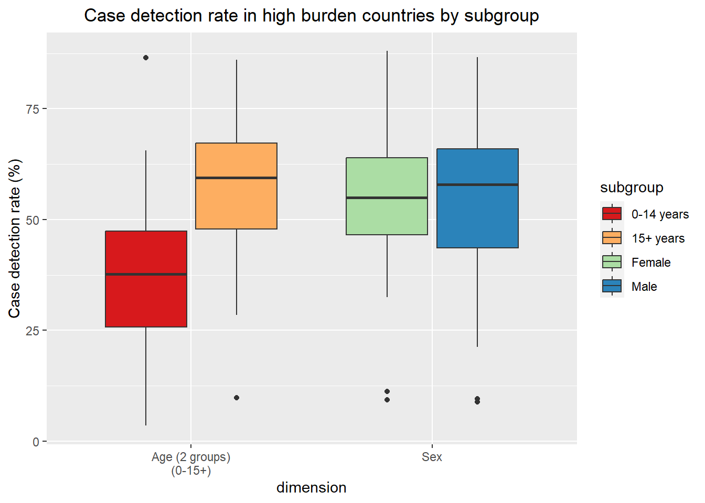
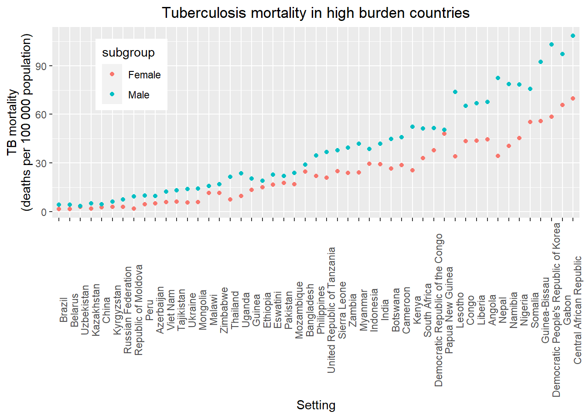
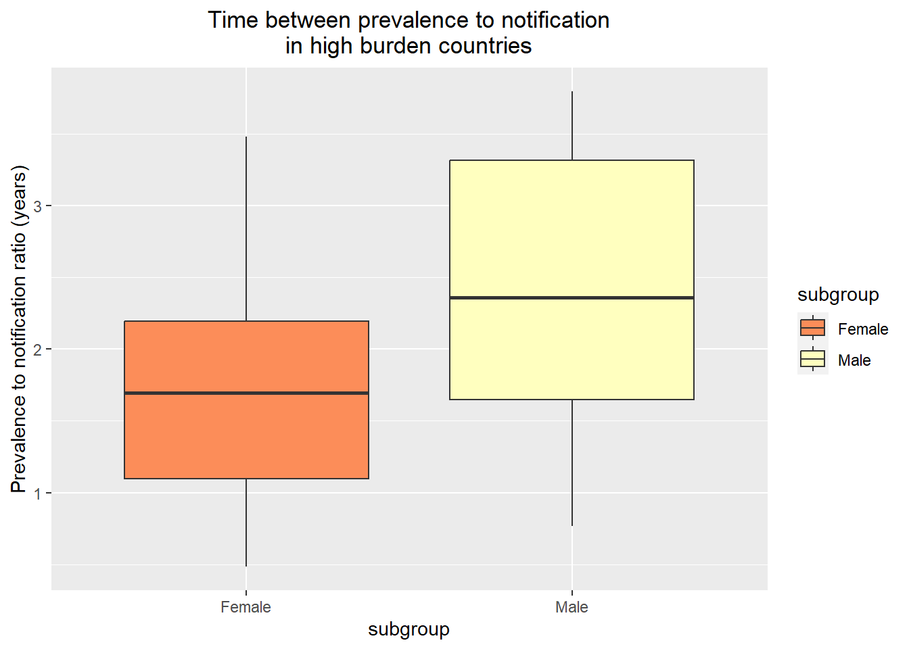
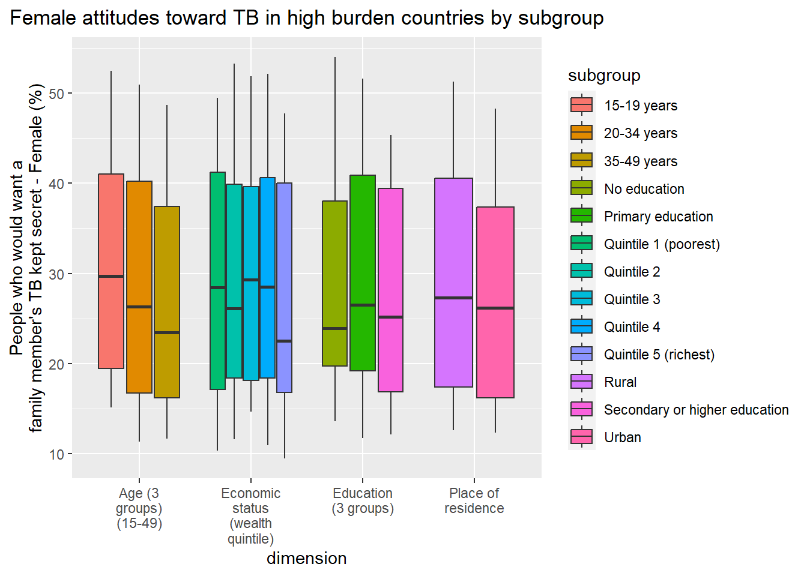
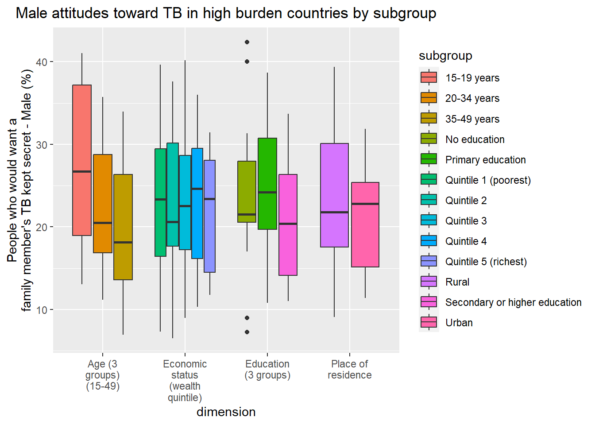
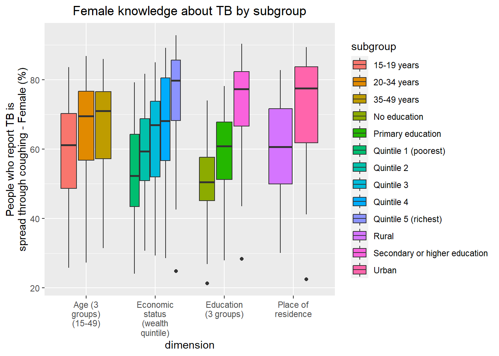
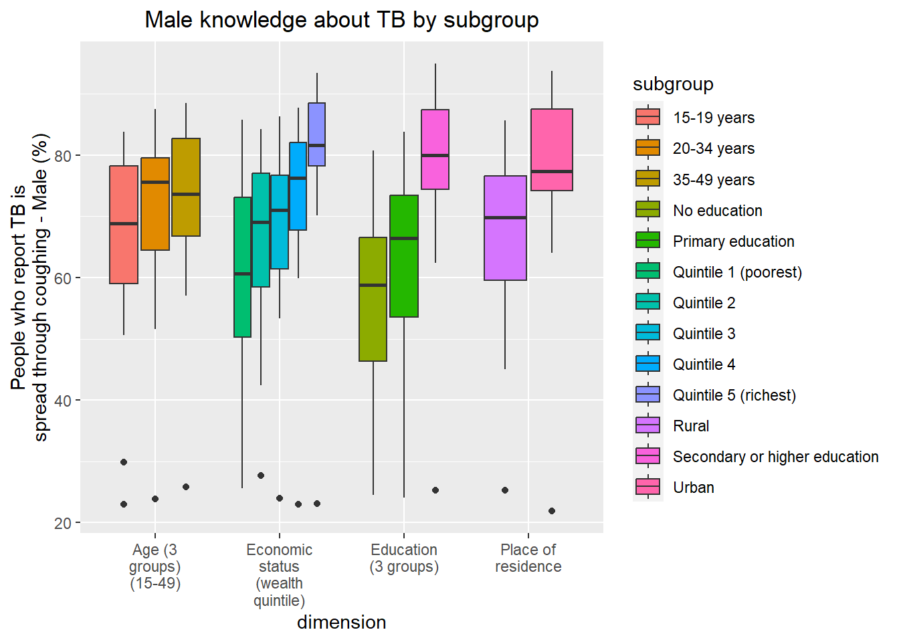

#load needed packages
library(here) #for data loading/saving
library(dplyr)
library(skimr)
library(ggplot2) #for plots/figures
library(forcats) #for factoringExploratory Analysis
Processing script with R script code
This Quarto file runs the exploratory analysis code from the exploratoryanalysis.r script. The processed data is examined using summary tables and figures.
To start, the needed packages are loaded and the processeddata.rda is loaded from the processed_data folder.
Plots produced here can be scatterplots, boxplots, violinplots, etc. Tables can be simple 2x2 tables or larger ones.
Setup
The exploratoyranalysis.r script needs to be indicated as the file from which to pull code chunks from.
Next, load the needed packages.
Then, load the data from the processed_data folder.
#Path to data.
data_location <- here::here("data","processed_data","processeddata.rda")
#load data
load(data_location)Data exploration through tables
I would like to look at each variable individually to see an overview of the indicator. These summary tables will be saved in the results folder. Similar to the cleaning code, I will separate the summary tables into groups of indicators.
#bcg coverage summary and save to file location
summary_bcg <- skimr::skim(bcg)
print(summary_bcg)── Data Summary ────────────────────────
Values
Name bcg
Number of rows 4256
Number of columns 7
_______________________
Column type frequency:
character 4
numeric 3
________________________
Group variables None
── Variable type: character ────────────────────────────────────────────────────
skim_variable n_missing complete_rate min max empty n_unique whitespace
1 setting 0 1 4 32 0 96 0
2 indicator_abbr 0 1 3 3 0 1 0
3 dimension 0 1 3 33 0 4 0
4 subgroup 0 1 4 29 0 12 0
── Variable type: numeric ──────────────────────────────────────────────────────
skim_variable n_missing complete_rate
1 year 0 1
2 population 0 1
3 BCG immunization coverage among one-year-olds (%) 0 1
mean sd p0 p25 p50 p75 p100 hist
1 2008. 7.18 1991 2003 2009 2014 2019 ▃▅▆▇▇
2 1666. 19899. 18.9 210. 378. 720. 696210. ▇▁▁▁▁
3 88.7 13.5 5.57 86.0 93.7 97.3 100 ▁▁▁▁▇bcgsummarytable_file <- here("results", "summary tables", "bcgsummarytable.rds")
saveRDS(summary_bcg, file = bcgsummarytable_file)
#catastrophic cost summary and save to file location
summary_catacost <- skimr::skim(catacost)
print(summary_catacost)── Data Summary ────────────────────────
Values
Name catacost
Number of rows 68
Number of columns 7
_______________________
Column type frequency:
character 4
numeric 3
________________________
Group variables None
── Variable type: character ────────────────────────────────────────────────────
skim_variable n_missing complete_rate min max empty n_unique whitespace
1 setting 0 1 5 32 0 19 0
2 indicator_abbr 0 1 8 8 0 1 0
3 dimension 0 1 18 33 0 2 0
4 subgroup 0 1 10 20 0 7 0
── Variable type: numeric ──────────────────────────────────────────────────────
skim_variable n_missing
1 year 0
2 population 53
3 Families affected by TB facing catastrophic costs due to TB (%) 0
complete_rate mean sd p0 p25 p50 p75 p100 hist
1 1 2018. 1.35 2015 2017 2017 2019 2020 ▃▇▁▇▂
2 0.221 205. 55.0 91 172 215 229 288 ▂▅▅▇▅
3 1 58.1 25.2 4 42.7 58.3 79.6 100 ▃▃▇▇▆catacostsummarytable_file <- here("results", "summary tables", "catacostsummarytable.rds")
saveRDS(summary_catacost, file = catacostsummarytable_file)
#case detection rate summary and save to file location
summary_cdr <- skimr::skim(cdr)
print(summary_cdr)── Data Summary ────────────────────────
Values
Name cdr
Number of rows 457
Number of columns 7
_______________________
Column type frequency:
character 4
numeric 3
________________________
Group variables None
── Variable type: character ────────────────────────────────────────────────────
skim_variable n_missing complete_rate min max empty n_unique whitespace
1 setting 0 1 4 37 0 116 0
2 indicator_abbr 0 1 3 3 0 1 0
3 dimension 0 1 3 22 0 2 0
4 subgroup 0 1 4 10 0 4 0
── Variable type: numeric ──────────────────────────────────────────────────────
skim_variable n_missing complete_rate mean sd p0
1 year 0 1 2020 0 2020
2 population 0 1 64129. 271451. 18
3 Case detection rate (%) 0 1 56.7 19.9 2.89
p25 p50 p75 p100 hist
1 2020 2020 2020 2020 ▁▁▇▁▁
2 2330 8000 27000 4565000 ▇▁▁▁▁
3 43.8 58.3 69.5 94.4 ▁▃▇▇▅cdrsummarytable_file <- here("results", "summary tables", "cdrsummarytable.rds")
saveRDS(summary_cdr, file = cdrsummarytable_file)
#drug resistance summary and save to file location
summary_drug <- skimr::skim(drug_resistance)
print(summary_drug)── Data Summary ────────────────────────
Values
Name drug_resistance
Number of rows 170
Number of columns 7
_______________________
Column type frequency:
character 4
numeric 3
________________________
Group variables None
── Variable type: character ────────────────────────────────────────────────────
skim_variable n_missing complete_rate min max empty n_unique whitespace
1 setting 0 1 4 32 0 85 0
2 indicator_abbr 0 1 15 15 0 1 0
3 dimension 0 1 3 3 0 1 0
4 subgroup 0 1 4 6 0 2 0
── Variable type: numeric ──────────────────────────────────────────────────────
skim_variable n_missing complete_rate mean sd p0 p25
1 year 0 1 2019 0 2019 2019
2 population 0 1 1707. 3116. 26 332.
3 People with MDR/RR-TB (%) 0 1 6.83 10.3 0 1.49
p50 p75 p100 hist
1 2019 2019 2019 ▁▁▇▁▁
2 647 1276. 21070 ▇▁▁▁▁
3 2.74 6.36 58.8 ▇▁▁▁▁drugsummarytable_file <- here("results", "summary tables", "drugsummarytable.rds")
saveRDS(summary_drug, file = drugsummarytable_file)The BCG coverage indicator has 4 dimensions and 12 subgroups and appears to have mostly data from smaller population sizes (most of the data has less than 720) and high BCG coverage (mean of 88.7%).
The catastrophic costs has 2 dimensions and 7 subgroups, but there does not appear to be any major trends with the overview. The population is more uniform but missing data, and the percentage estimate does not have any large trends.
The case detection rate has 2 dimensions and 4 subgroups. All data is from 2020 and most of the population sizes are below 27000. The case detection rate has an average of 56.7%.
Drug resistance studies 2 subgroups within a dimension, only has data from 2019, and tends to have a low population size and percentage estimate.
#incidence summary and save to file location
summary_inc <- skimr::skim(incidence)
print(summary_inc)── Data Summary ────────────────────────
Values
Name incidence
Number of rows 388
Number of columns 7
_______________________
Column type frequency:
character 4
numeric 3
________________________
Group variables None
── Variable type: character ────────────────────────────────────────────────────
skim_variable n_missing complete_rate min max empty n_unique whitespace
1 setting 0 1 4 37 0 194 0
2 indicator_abbr 0 1 9 9 0 1 0
3 dimension 0 1 3 3 0 1 0
4 subgroup 0 1 4 6 0 2 0
── Variable type: numeric ──────────────────────────────────────────────────────
skim_variable n_missing complete_rate
1 year 0 1
2 population 0 1
3 TB incidence (new infections per 100 000 population) 0 1
mean sd p0 p25 p50 p75 p100 hist
1 2020 0 2020 2020 2020 2020 2020 ▁▁▇▁▁
2 19974255. 73893692. 798 1013975. 4369962. 14508898 738247340 ▇▁▁▁▁
3 107. 147. 0 9.28 40.9 146. 908. ▇▁▁▁▁incsummarytable_file <- here("results", "summary tables", "incsummarytable.rds")
saveRDS(summary_inc, file = incsummarytable_file)
#mortality summary and save to file location
summary_mort <- skimr::skim(mortality)
print(summary_mort)── Data Summary ────────────────────────
Values
Name mortality
Number of rows 388
Number of columns 7
_______________________
Column type frequency:
character 4
numeric 3
________________________
Group variables None
── Variable type: character ────────────────────────────────────────────────────
skim_variable n_missing complete_rate min max empty n_unique whitespace
1 setting 0 1 4 37 0 194 0
2 indicator_abbr 0 1 9 9 0 1 0
3 dimension 0 1 3 3 0 1 0
4 subgroup 0 1 4 6 0 2 0
── Variable type: numeric ──────────────────────────────────────────────────────
skim_variable n_missing complete_rate
1 year 0 1
2 population 0 1
3 TB mortality (deaths per 100 000 population) 0 1
mean sd p0 p25 p50 p75 p100 hist
1 2020 0 2020 2020 2020 2020 2020 ▁▁▇▁▁
2 19974255. 73893692. 798 1013975. 4369962. 14508898 738247340 ▇▁▁▁▁
3 13.2 21.1 0 0.630 3.39 16.9 140. ▇▁▁▁▁mortsummarytable_file <- here("results", "summary tables", "mortsummarytable.rds")
saveRDS(summary_mort, file = mortsummarytable_file)TB incidence studies 2 subgroups within a dimension and only has data from 2020. The population sizes are much higher than the other variables, and the incidence is a continuous variable (rather than percentage like many of the other indicators). Most observations appear to have low TB incidience.
TB mortality is similar to the incidence variable in terms of subgroups, year, and population. The mortality outcome is also continuous, and the highest mortality rate is 140 deaths/100000 population.
#prevalence to notification summary and save to file location
summary_pn <- skimr::skim(pn)
print(summary_pn)── Data Summary ────────────────────────
Values
Name pn
Number of rows 62
Number of columns 6
_______________________
Column type frequency:
character 4
numeric 2
________________________
Group variables None
── Variable type: character ────────────────────────────────────────────────────
skim_variable n_missing complete_rate min max empty n_unique whitespace
1 setting 0 1 5 37 0 28 0
2 indicator_abbr 0 1 3 3 0 1 0
3 dimension 0 1 3 3 0 1 0
4 subgroup 0 1 4 6 0 2 0
── Variable type: numeric ──────────────────────────────────────────────────────
skim_variable n_missing complete_rate mean sd
1 year 0 1 2014. 3.23
2 Prevalence to notification ratio (years) 0 1 2.08 0.974
p0 p25 p50 p75 p100 hist
1 2007 2012 2014 2017. 2019 ▂▃▇▃▆
2 0.470 1.36 1.97 2.70 4.14 ▆▇▇▃▅pnsummarytable_file <- here("results", "summary tables", "pnsummarytable.rds")
saveRDS(summary_pn, file = pnsummarytable_file)
#prevalence summary and save to file location
summary_prev <- skimr::skim(prevalence_place)
print(summary_prev)── Data Summary ────────────────────────
Values
Name prevalence_place
Number of rows 40
Number of columns 6
_______________________
Column type frequency:
character 4
numeric 2
________________________
Group variables None
── Variable type: character ────────────────────────────────────────────────────
skim_variable n_missing complete_rate min max empty n_unique whitespace
1 setting 0 1 5 37 0 20 0
2 indicator_abbr 0 1 16 16 0 1 0
3 dimension 0 1 18 18 0 1 0
4 subgroup 0 1 5 5 0 2 0
── Variable type: numeric ──────────────────────────────────────────────────────
skim_variable n_missing complete_rate mean
1 year 0 1 2013.
2 TB prevalence (cases per 100 000 population) 0 1 458.
sd p0 p25 p50 p75 p100 hist
1 1.88 2011 2012 2013 2015 2018 ▇▅▇▁▁
2 223. 109 291. 401 588. 1014 ▅▇▂▂▂prevsummarytable_file <- here("results", "summary tables", "prevsummarytable.rds")
saveRDS(summary_prev, file = prevsummarytable_file)Prevalence to notification ratio studies 2 subgroups within a dimension. There does not appear to be a trend toward shorter or longer length of time.
TB prevalence looks at 2 subgroups within a dimension, and there appears to be trend to lower amounts of cases (mean = 458) with the highest prevalence count being 1014 cases/100,000 population.
#attitude summary and save to file location
summary_att <- skimr::skim(tb_att)
print(summary_att)── Data Summary ────────────────────────
Values
Name tb_att
Number of rows 48
Number of columns 7
_______________________
Column type frequency:
character 4
numeric 3
________________________
Group variables None
── Variable type: character ────────────────────────────────────────────────────
skim_variable n_missing complete_rate min max empty n_unique whitespace
1 setting 0 1 4 18 0 15 0
2 indicator_abbr 0 1 6 6 0 1 0
3 dimension 0 1 3 3 0 1 0
4 subgroup 0 1 4 6 0 2 0
── Variable type: numeric ──────────────────────────────────────────────────────
skim_variable n_missing
1 year 0
2 population 0
3 People who would want a family member's TB kept secret (%) 0
complete_rate mean sd p0 p25 p50 p75 p100 hist
1 1 2011. 4.02 2004 2007 2012 2014 2019 ▇▃▇▆▁
2 1 27770. 89714. 1249 4894. 7634. 16268. 618274 ▇▁▁▁▁
3 1 23.3 11.0 2.07 15.6 21.5 30.3 50.7 ▂▇▆▃▂attsummarytable_file <- here("results", "summary tables", "attsummarytable.rds")
saveRDS(summary_att, file = attsummarytable_file)
#female attitudesummary and save to file location
summary_attf <- skimr::skim(tb_att_f)
print(summary_attf)── Data Summary ────────────────────────
Values
Name tb_att_f
Number of rows 323
Number of columns 7
_______________________
Column type frequency:
character 4
numeric 3
________________________
Group variables None
── Variable type: character ────────────────────────────────────────────────────
skim_variable n_missing complete_rate min max empty n_unique whitespace
1 setting 0 1 4 18 0 14 0
2 indicator_abbr 0 1 8 8 0 1 0
3 dimension 0 1 18 33 0 4 0
4 subgroup 0 1 5 29 0 13 0
── Variable type: numeric ──────────────────────────────────────────────────────
skim_variable n_missing
1 year 0
2 population 0
3 People who would want a family member's TB kept secret - Female (%) 0
complete_rate mean sd p0 p25 p50 p75 p100 hist
1 1 2011. 3.99 2004 2007 2012 2013 2019 ▇▃▇▅▁
2 1 12756. 42955. 61 1750 3408 6064. 429594 ▇▁▁▁▁
3 1 26.8 12.0 5.42 17.2 24.1 34.6 54.0 ▃▇▅▃▂attfsummarytable_file <- here("results", "summary tables", "attfsummarytable.rds")
saveRDS(summary_attf, file = attfsummarytable_file)
#male attitude summary and save to file location
summary_attm <- skimr::skim(tb_att_m)
print(summary_attm)── Data Summary ────────────────────────
Values
Name tb_att_m
Number of rows 294
Number of columns 7
_______________________
Column type frequency:
character 4
numeric 3
________________________
Group variables None
── Variable type: character ────────────────────────────────────────────────────
skim_variable n_missing complete_rate min max empty n_unique whitespace
1 setting 0 1 5 18 0 13 0
2 indicator_abbr 0 1 8 8 0 1 0
3 dimension 0 1 18 33 0 4 0
4 subgroup 0 1 5 29 0 13 0
── Variable type: numeric ──────────────────────────────────────────────────────
skim_variable n_missing
1 year 0
2 population 0
3 People who would want a family member's TB kept secret - Male (%) 0
complete_rate mean sd p0 p25 p50 p75 p100 hist
1 1 2011. 3.98 2005 2007 2012 2014 2019 ▇▃▇▇▁
2 1 4037. 8573. 196 774. 1446. 2933. 74557 ▇▁▁▁▁
3 1 19.9 9.50 1.36 13.7 20.0 26.7 42.4 ▃▇▇▆▂attmsummarytable_file <- here("results", "summary tables", "attmsummarytable.rds")
saveRDS(summary_attm, file = attmsummarytable_file)Attitudes toward keeping TB infection a secret studies 2 subgroups within a dimension for the overall measure, and when split into female and male, measures 4 dimensions with 14 subgroups. All data was collected from 2011 to 2019, and each group tends to have a relatively low percentage (means of 23.3%, 26.8%, and 19.9%).
#spread through cough summary and save to file location
summary_cough <- skimr::skim(tb_cough)
print(summary_cough)── Data Summary ────────────────────────
Values
Name tb_cough
Number of rows 61
Number of columns 7
_______________________
Column type frequency:
character 4
numeric 3
________________________
Group variables None
── Variable type: character ────────────────────────────────────────────────────
skim_variable n_missing complete_rate min max empty n_unique whitespace
1 setting 0 1 4 11 0 20 0
2 indicator_abbr 0 1 8 8 0 1 0
3 dimension 0 1 3 3 0 1 0
4 subgroup 0 1 4 6 0 2 0
── Variable type: numeric ──────────────────────────────────────────────────────
skim_variable n_missing complete_rate
1 year 0 1
2 population 0 1
3 People who report TB is spread through coughing (%) 0 1
mean sd p0 p25 p50 p75 p100 hist
1 2011. 4.05 2004 2007 2012 2014 2019 ▇▃▆▇▁
2 23727. 79853. 1247 4373 7729 13514 618274 ▇▁▁▁▁
3 66.7 14.3 24.5 57.6 69.2 77.5 88.2 ▁▂▃▇▆coughsummarytable_file <- here("results", "summary tables", "coughsummarytable.rds")
saveRDS(summary_cough, file = coughsummarytable_file)
#female spread through cough summary and save to file location
summary_coughf <- skimr::skim(tb_cough_f)
print(summary_coughf)── Data Summary ────────────────────────
Values
Name tb_cough_f
Number of rows 427
Number of columns 7
_______________________
Column type frequency:
character 4
numeric 3
________________________
Group variables None
── Variable type: character ────────────────────────────────────────────────────
skim_variable n_missing complete_rate min max empty n_unique whitespace
1 setting 0 1 4 11 0 19 0
2 indicator_abbr 0 1 10 10 0 1 0
3 dimension 0 1 18 33 0 4 0
4 subgroup 0 1 5 29 0 13 0
── Variable type: numeric ──────────────────────────────────────────────────────
skim_variable n_missing
1 year 0
2 population 0
3 People who report TB is spread through coughing - Female (%) 0
complete_rate mean sd p0 p25 p50 p75 p100 hist
1 1 2011. 4.00 2004 2007 2012 2014 2019 ▇▃▇▇▁
2 1 10661. 37583. 62 1732. 3232 5747 429594 ▇▁▁▁▁
3 1 62.3 16.4 21.3 51.3 64.2 75.2 92.8 ▂▃▆▇▅coughfsummarytable_file <- here("results", "summary tables", "coughfsummarytable.rds")
saveRDS(summary_coughf, file = coughfsummarytable_file)
#male spread through cough summary and save to file location
summary_coughm <- skimr::skim(tb_cough_m)
print(summary_coughm)── Data Summary ────────────────────────
Values
Name tb_cough_m
Number of rows 359
Number of columns 7
_______________________
Column type frequency:
character 4
numeric 3
________________________
Group variables None
── Variable type: character ────────────────────────────────────────────────────
skim_variable n_missing complete_rate min max empty n_unique whitespace
1 setting 0 1 5 11 0 17 0
2 indicator_abbr 0 1 10 10 0 1 0
3 dimension 0 1 18 33 0 4 0
4 subgroup 0 1 5 29 0 13 0
── Variable type: numeric ──────────────────────────────────────────────────────
skim_variable n_missing
1 year 0
2 population 0
3 People who report TB is spread through coughing - Male (%) 0
complete_rate mean sd p0 p25 p50 p75 p100 hist
1 1 2011. 4.02 2004 2008 2012 2014. 2019 ▆▃▅▇▁
2 1 3385. 7778. 25 730. 1302 2462 74557 ▇▁▁▁▁
3 1 68.8 16.0 21.9 60.5 71.7 79.9 94.9 ▁▂▅▇▅coughmsummarytable_file <- here("results", "summary tables", "coughmsummarytable.rds")
saveRDS(summary_coughm, file = coughmsummarytable_file)Knowledge indicators of people reporting TB is spread through cough has similar dimensions and subgroups as the attitudes indicators. Data collection also occured during the same years (2011-2019). The groups all tended to have similar levels of knowledge based on the overall view (means of 66.7%, 62.3%, 68.8%).
All summary tables are saved in the results folder.
Data exploration through figures
After examining the indicators, I would like to explore the differences between the subgroups using graphs and plots.
For each indicator, I will be creating a plot using ggplot() to study differences between subgroups. For most of these variables, I will be using a boxplot in order to compare the summary measures between subgroups. For viewing multiple dimensions and comparing subgroups within each dimension, I will be colors and grouping through ggplot().
p1 <- bcg %>% ggplot(aes(x= dimension,
y = `BCG immunization coverage among one-year-olds (%)`,
fill = subgroup)) +
geom_boxplot()+
theme(axis.text.x = element_text(angle = 90))+
scale_fill_brewer(palette = "Spectral")
plot(p1) # plots bcg coverage by dimension and subgroupWarning in RColorBrewer::brewer.pal(n, pal): n too large, allowed maximum for palette Spectral is 11
Returning the palette you asked for with that many colorsfigure_file = here("results", "figures", "bcgexplore.png")
ggsave(filename = figure_file, plot=p1) Saving 7 x 5 in imageWarning in RColorBrewer::brewer.pal(n, pal): n too large, allowed maximum for palette Spectral is 11
Returning the palette you asked for with that many colorsp2 <- catacost %>% ggplot(aes(x=dimension,
y = `Families affected by TB facing catastrophic costs due to TB (%)`,
fill = subgroup)) +
geom_boxplot()+
theme(axis.text.x = element_text(angle = 90))+
scale_fill_brewer(palette = "Spectral")
plot(p2) # plots catastrophic costs by dimension and subgroup
figure_file = here("results", "figures", "catacostexplore.png")
ggsave(filename = figure_file, plot=p2) Saving 7 x 5 in imageThe first plot show BCG coverage among under 1 year olds by economic status, education, place of residence, and sex. The economic status and education groups shows a clear trend of high coverage for higher income and higher education. The place of residence shows a higher coverage for urban areas, but the rural sites show greater spread of data. The coverage seems about equal between females and males. all categories show a significant number of outliers.
The second plot shows catastrophic costs due to TB by economic level and TB resistance. Higher income seems to be correlated with lower catastrophic costs, and drug resistance has a much higher correlation with costs compared to non-drug resistant TB.
p3 <- cdr %>% ggplot(aes(x=dimension, y = `Case detection rate (%)`,
fill = subgroup)) +
geom_boxplot()+
theme(axis.text.x = element_text(angle = 90))+
scale_fill_brewer(palette = "Spectral")
plot(p3) # plots case detection rate by dimensions and subgroup
figure_file = here("results", "figures", "cdrexplore.png")
ggsave(filename = figure_file, plot=p3) Saving 7 x 5 in imagep4 <- drug_resistance %>% ggplot(aes(x=subgroup,
y = `People with MDR/RR-TB (%)`,
fill = subgroup)) +
geom_boxplot()+
theme(axis.text.x = element_text(angle = 90))+
scale_fill_brewer(palette = "Spectral")
plot(p4) # plots percentage of drug-resistant TB by sexfigure_file = here("results", "figures", "drugexplore.png")
ggsave(filename = figure_file, plot=p4) Saving 7 x 5 in imageThe third plot shows case detection rate by age and sex. Higher age groups tend to have higher detection rates (although the age group is quite large).
The forth plot shows drug resistance by sex. Neither group appears to have a higher percentage of drug resistance.
p5 <- incidence %>% ggplot(aes(x=fct_reorder(
setting,`TB incidence (new infections per 100 000 population)`),
y = `TB incidence (new infections per 100 000 population)`,
color = subgroup)) +
geom_point()+
theme(axis.text.x = element_text(angle = 90))+
scale_fill_brewer(palette = "Spectral")+
xlab("setting")
plot(p5) #plots incidence by country from lowest incidence to highest, colored by subgroupfigure_file = here("results", "figures", "incexplore.png")
ggsave(filename = figure_file, plot=p5) Saving 7 x 5 in imagecolnames(mortality)[1] "setting"
[2] "year"
[3] "indicator_abbr"
[4] "dimension"
[5] "subgroup"
[6] "population"
[7] "TB mortality (deaths per 100 000 population)"p6 <- mortality %>% ggplot(aes(x=fct_reorder(
setting, `TB mortality (deaths per 100 000 population)`),
y = `TB mortality (deaths per 100 000 population)`,
color = subgroup)) +
geom_point()+
theme(axis.text.x = element_text(angle = 90))+
scale_fill_brewer(palette = "Spectral")+
xlab("setting")
plot(p6) #plots mortality by country from lowest mortality to highest, colored by subgroupfigure_file = here("results", "figures", "mortexplore.png")
ggsave(filename = figure_file, plot=p6) Saving 7 x 5 in imagep7 <- pn %>% ggplot(aes(x=subgroup, y = `Prevalence to notification ratio (years)`, fill = subgroup)) +
geom_boxplot() +
scale_fill_brewer(palette = "Spectral")
plot(p7) #plots prevalence to notification ratio by sex
figure_file = here("results", "figures", "pnexplore.png")
ggsave(filename = figure_file, plot=p7) Saving 7 x 5 in imagep8 <- prevalence_place %>% ggplot(aes(x=fct_reorder(
setting, `TB prevalence (cases per 100 000 population)`),
y = `TB prevalence (cases per 100 000 population)`,
color = subgroup)) +
geom_point()+
theme(axis.text.x = element_text(angle = 90))+
scale_fill_brewer(palette = "Spectral")+
xlab("setting")
plot(p8) #plots TB prevalence by country from lowest prevalence to highest, colored by subgroup
figure_file = here("results", "figures", "prevexplore.png")
ggsave(filename = figure_file, plot=p8) Saving 7 x 5 in imageThe fifth plot and sixth plot shows TB incidence and mortality rates by country, separated by sex. The countries are ordered from lowest to highest rate, and males seem to have a higher proportion of TB cases.
The seventh plot shows prevalence to notification ratio by sex. Males tend to have a longer gap between getting TB and being notified they have TB.
The eighth plot shows TB prevalence by country, showing differences between rural and urban areas. There appears to be a small trend of urban areas having higher prevalence then rural.
p9 <- tb_att %>% ggplot(aes(x=subgroup,
y = `People who would want a family member's TB kept secret (%)`, fill = subgroup)) +
geom_boxplot()+
scale_fill_brewer(palette = "Spectral")
plot(p9) # plots attitudes toward TB by sexfigure_file = here("results", "figures", "attexplore.png")
ggsave(filename = figure_file, plot=p9) Saving 7 x 5 in imagep10 <- tb_att_f %>% ggplot(aes(x=dimension,
y = `People who would want a family member's TB kept secret - Female (%)`,
fill = subgroup)) +
geom_boxplot()+
theme(axis.text.x = element_text(angle = 90))
plot(p10) # plots attitudes toward TB by dimension and subgroup for females
figure_file = here("results", "figures", "attfexplore.png")
ggsave(filename = figure_file, plot=p10) Saving 7 x 5 in imagep11 <- tb_att_m %>% ggplot(aes(x=dimension,
y = `People who would want a family member's TB kept secret - Male (%)`,
fill = subgroup)) +
geom_boxplot()+
theme(axis.text.x = element_text(angle = 90))
plot(p11) # plots attitudes toward TB by dimension and subgroup for males
figure_file = here("results", "figures", "attmexplore.png")
ggsave(filename = figure_file, plot=p11) Saving 7 x 5 in imageThe ninth plot shows the overall attitude towards keeping a family member’s TB a secret by sex. Females tend to be correlated with a higher percentage compared to males.
The tenth and eleventh graph shows the same attitude indicator for males and females while taking into account age, economic status, education, and residence. For both groups, higher age is appears to be associated with decreased percentages. There may also be a small negative correlation between education and economic status and attitude percentage.
p12 <- tb_cough %>% ggplot(aes(x=subgroup,
y = `People who report TB is spread through coughing (%)`,
fill = subgroup)) +
geom_boxplot()+
scale_fill_brewer(palette = "Spectral")
plot(p12) # plots knowledge about TB by sexfigure_file = here("results", "figures", "coughexplore.png")
ggsave(filename = figure_file, plot=p12) Saving 7 x 5 in imagep13 <- tb_cough_f %>% ggplot(aes(x=dimension,
y = `People who report TB is spread through coughing - Female (%)`,
fill = subgroup)) +
geom_boxplot()+
theme(axis.text.x = element_text(angle = 90))
plot(p13) # plots knowledge about TB by dimension and subgroup for females
figure_file = here("results", "figures", "coughfexplore.png")
ggsave(filename = figure_file, plot=p13) Saving 7 x 5 in imagep14 <- tb_cough_m %>% ggplot(aes(x=dimension,
y = `People who report TB is spread through coughing - Male (%)`,
fill = subgroup)) +
geom_boxplot()+
theme(axis.text.x = element_text(angle = 90))
plot(p14)#plots knowledge about TB by dimension and subgroup for males
figure_file = here("results", "figures", "coughmexplore.png")
ggsave(filename = figure_file, plot=p14) Saving 7 x 5 in imageThe twelfth plot shows TB knowledge about spreading the disease through cough by sex. Males tended to have a slightly higher proportion compared to females.
The thirteenth and fourteenth plot shows the same knowledge question for females and males, separated into the same dimensions as the attitude indicator. For both groups, increasing economic status and education showed an association with increased knowledge about TB. Urban populations also tended to show a higher percentage of knowledge compared to rural. For age groups, the 2 older groups (20-34 and 35-49) had similar proportions, but both groups had a higher percentage than the youngest (15-19). Male data appeared to be slightly less dispersed than female responses.
In the next proportion of the exploratory analysis, I would like to examine more closely the influence of outliers (and if the data needs to be separated by burden of TB) as well as start comparing indicators to TB mortality, incidence, and prevalence.